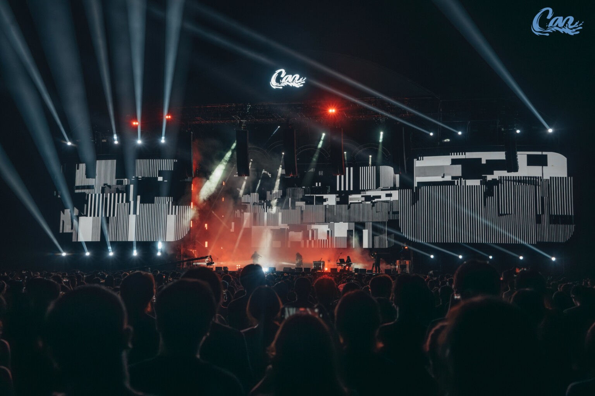

Kashiwa Daisuke 合作系列
现场视听 / 白空间纵深 / 雾气氛围 / 沉浸式错觉
与日本音乐人 Kashiwa Daisuke（柏大辅）合作的现场视觉系列。该系列目前包括深圳 BO LIVE 专场与 CAN Festival 现场项目，围绕白空间纵深、雾气、环境过渡与沉浸式错觉展开，聚焦氛围段落与空间感知设计。
核心方向
视听表演
Audiovisual Performance
现场视觉
Live Visuals
时间结构
Temporal Structure
空间生成
Spatial Generation
代表项目
《机械光合：TITAN的全息声林》是与 Kashiwa Daisuke / Yuki Murata 合作的深圳 BO LIVE 专场，包含全息纱幕、裸眼3D与音画互动段落，围绕《TITAN》的声音氛围与空间感知展开。
